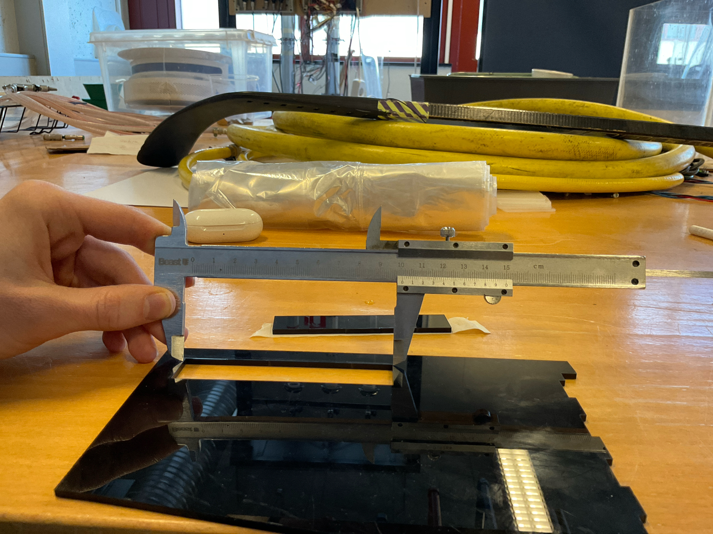
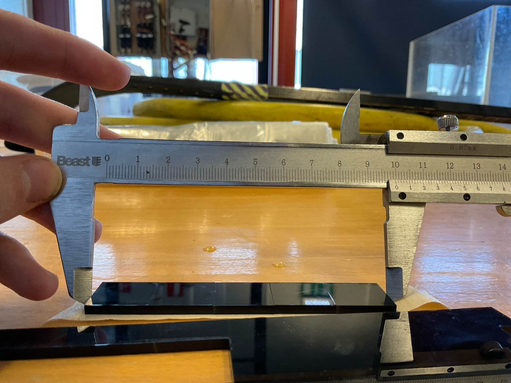

Bitar
Fyrsta sem var gert var að teikna nokkra 1cm^2 ferhyrninga í Inkscape og notað það til að skera út bita úr einhverskonar plasti.
Mælingar
Til þess að mæla karf var tekið bita úr skornu plasti og mælit lengdina
Svo var mælt alla bitana saman og gert "Lengd Holu - Lengd allra bita"
